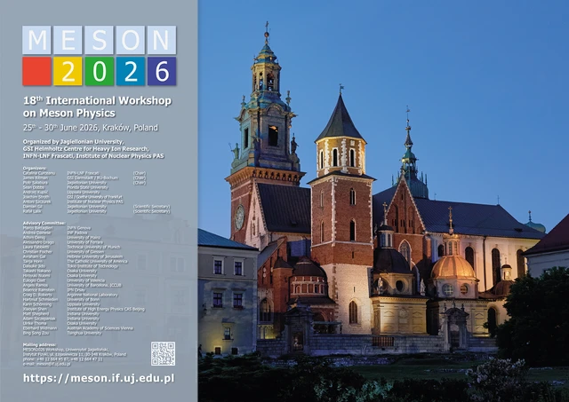

报告
报告与会议
国际会议与国内学术交流，按时间倒序整理。
国际会议
4 场报告会议官方海报 · 点击缩略图查看原图。设计版权归相应会议组织方所有。
国内会议
11 场报告利用 J/ψ 衰变产生的纠缠超子–反超子对寻找 CP 破坏的新方法
从宇称不守恒到 CP 破坏——纪念李政道先生
在正负电子对撞机上探测超子电偶极矩
2024 年新物理工作组研讨会
BESIII 超子 CP 破坏检验进展
第二届强子物理新进展研讨会
超级陶粲装置实验计划
第七届强子谱与强子结构研讨会
在正负电子对撞机上探测超子电偶极矩
2024 年超子物理研讨会
BESIII 超子–核子相互作用与超子电偶极矩研究
2023 年重味物理前沿：实验与理论研讨会
K⁰–K̅⁰ 混合中的 CP/CPT 破坏研究
2023 年超级陶粲装置研讨会
BESIII 超子精密物理研究进展
2023 年粒子物理、天体物理与宇宙学前沿专题研讨会
BESIII 超子精密物理研究进展
BESIII 合作组发表 500 篇论文庆祝活动
在 LHCb 的 B 介子衰变中寻找五夸克态
中国物理学会高能物理分会第十一届全国会员代表大会暨学术年会
Λ 衰变参数的改进测量
粲物理研讨会